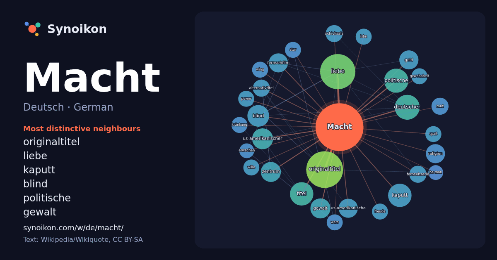

Deutsch · German · popular word
Macht
“power” · The words found around it in 954 instances from German Wikipedia, Wikiquote.

Most distinctive neighbours
- originaltitel 35×
- liebe 28×
- kaputt 16×
- blind 14×
- politische 12×
- gewalt 11×
- fernsehfilm 11×
- religion 9.6×
- us-amerikanischer 9.4×
- geld 9.0×
- us-amerikanische 9.0×
- alternativtitel 8.9×
- mut 8.8×
- zentrum 8.5×
- schicksals 8.3×
- fernsehserie 8.1×
- kränkung 8.0×
- gewohnheit 8.0×
- wars 7.9×
- wing 7.9×
× = how many times more often than in general German Wikipedia text.
Most frequent neighbours
- originaltitel 37
- liebe 34
- deutscher 17
- politische 16
- kaputt 15
- titel 15
- blind 13
- deutsche 12
- deutschen 12
- us-amerikanischer 12
- gewalt 11
- zentrum 11
- fernsehfilm 10
- geld 10
- religion 10
- us-amerikanische 10
- krieg 9
- alternativtitel 8
- arbeit 8
- deutschland 8
In context
- Macht bezeichnet die Fähigkeit einer Institution, Person oder Gruppe, auf das Denken und Verhalten einzelner Personen, sozialer Gruppen oder Bevölkerungsteile Wikipedia snippets · Macht
- Mit aller Macht ist ein Filmdrama von Mike Nichols aus dem Jahr 1998, der damit Joe Kleins Roman Primary Colors: A Novel of Politics verfilmt hat. Henry Wikipedia snippets · Mit aller Macht
- Gabriel Macht (* 22. Januar 1972 in New York City, New York) ist ein US-amerikanischer Schauspieler, der vor allem durch seine Hauptrolle als Harvey Specter Wikipedia snippets · Gabriel Macht
- Macht kaputt, was euch kaputt macht ist ein 1969 von Rio Reiser (Musik) und Norbert Krause (Text) geschriebenes Lied, das 1970 von der deutschen Politrock-Band Wikipedia snippets · Macht kaputt, was euch kaputt macht
- Traffic – Macht des Kartells (Originaltitel: Traffic) ist ein Episodendrama über den „War on Drugs“ von Steven Soderbergh aus dem Jahr 2000, das auf der Wikipedia snippets · Traffic – Macht des Kartells
- Der Wille zur Macht ist ein Gedanke Friedrich Nietzsches, der von ihm zum ersten Mal in Also sprach Zarathustra vorgestellt und in allen nachfolgenden Wikipedia snippets · Wille zur Macht
- Die 48 Gesetze der Macht oder auch Power – Die 48 Gesetze der Macht (englischer Originaltitel: The 48 Laws of Power) ist ein Buch aus dem Jahr 1998. Es Wikipedia snippets · Die 48 Gesetze der Macht
- Birdman oder (Die unverhoffte Macht der Ahnungslosigkeit) ist eine US-amerikanische schwarze Komödie von Alejandro González Iñárritu. Der Film, der Michael Wikipedia snippets · Birdman oder (Die unverhoffte Macht der Ahnungslosigkeit)
More German words
- Arbeit
- Brücke
- Essen
- Familie
- Geld
- Geschichte
- Gesundheit
- Gold
- Gott
- Kunst
- Leben
- Natur
- Tod
- Wahrheit
- Wasser
- Wissenschaft
- Zug
Precomputed on 2026-10-09 with default settings (±5 words, medium corpus). The interactive map can refresh it with live data.